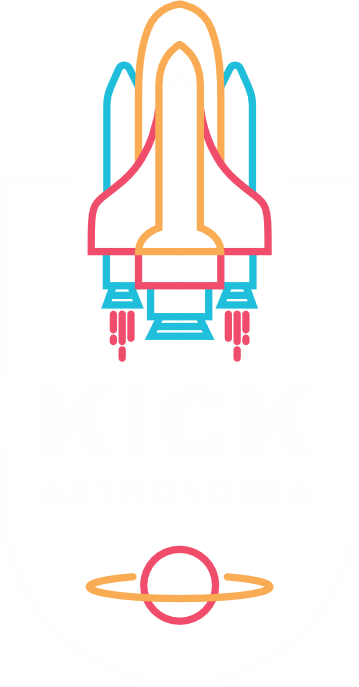

Kick Astronomia
Seu Site do espaço

A maioria dos exoplanetas descobertos até agora estão numa região relativamente pequena da nossa galáxia, a Via Láctea. ("Pequeno" significa dentro de milhares de anos-luz do nosso sistema solar; um ano-luz equivale a 5,88 trilhões de milhas, ou 9,46 trilhões de quilômetros.) Mesmo o exoplaneta conhecido mais próximo da Terra, Proxima Centauri b, ainda está a cerca de 4 anos-luz ausente. Sabemos que existem mais planetas do que estrelas na galáxia.
Ao medir os tamanhos (diâmetros) e massas (pesos) dos exoplanetas, podemos ver composições que variam de rochosas (como a Terra e Vênus) a ricas em gás (como Júpiter e Saturno). Alguns planetas podem ser dominados por água ou gelo, enquanto outros são dominados por ferro ou carbono. Identificamos mundos de lava cobertos por mares derretidos, planetas inchados com a densidade de isopor e núcleos densos de planetas ainda orbitando suas estrelas.